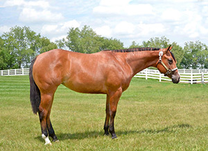
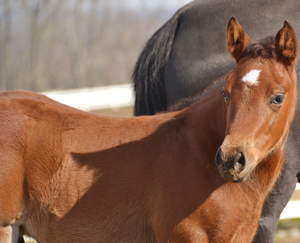
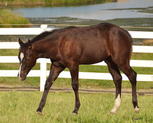
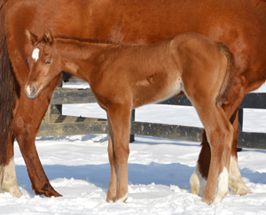

2012 Horses
2013 Horses | 2012 Horses | 2011 Horses | 2010 Horses
2009 Horses | Broodmares | Sold
MOM ZENS HER BEST ~ 2012 FILLY
SIRE: RL Best Of Sudden DAM: Radical Zensation
Double registered AQHA/ABRA!
WAITING ON ROGER ~ 2012 COLT
SIRE: Invitation Only DAM: Diamonds Impulse
Out of Diamonds Impulse, daughter of Impulsions out of RD Red Hot Lover. Dam is multiple point earner in Western Pleasure. This is her first foal.
ONLY HADA LETA SPOT ~ 2012 Filly AQHA/APHA
SIRE: Invitation Only DAM: Ceeta Leta
Out of Ceeta Leta, full sister to APHA World Champion and out of the great mare, Zipped Tight
WILLY GOT IT WHITE ~ 2012 FILLY
SIRE: Winnies Willy DAM: My Invested Machine (A Good Machine)
Dam is a Reichert Winner, multiple point earner.? Amateur Select World Show qualifier in Performance Halter Mares.

CHEX OUT MY INVITE ~ 2012 COLT
SIRE: Invitation Only DAM: Chex So Good
Sired by Invitation Only and out of Chex So Good, young daughter of Zippo Pine Chex.

SOLD
NO QUESTION IM LAZY ~ 2012 COLT
SIRE: Lazy Loper DAM: My Invested Machine by A Good Machine
Dam is Reichert Winner and World Show Qualified Amateur Select World Show. Congratulations to Scott Frye on your recent purchase.


WITCH ONES INVITED ~ 2012 Filly
SIRE: Invitation Only DAM: Zippos Bewitched
Dam is a Reserve World Champion producer.

SOLD
SERIOUSLY IM GOOD ~ 2012 GELDING
SIRE: Zippos Mr Good Bar DAM: Mega Hot
Dam is a daughter of Hot N Blazing out of
Mega Scotch, 200+ points. This is her first foal.
Congratulations to Marion Valerio on your recent purchase.

LAZY AS ZIN ~ 2012 Filly
SIRE: Lazy Loper DAM: Zinvitation by Invitation Only
2012 Filly sired by Lazy Loper out of Zinvitation (Invitation Only) out of the great mare, Elegant Zippo.

ONLY A LIL IMPULSIZE ~ 2012 COLT
SIRE: Invitation Only DAM: Impulsive Debutante
2012 gelding sired by Invitation Only and out of Impulsive Debutante. Dam is a Superior producer, AQHA Champion producer and multiple Reserve World Champion producer.

ITS WILLY ABOUT ME ~ 2012 Filly
SIRE: Winnies Willy DAM: Its Chip To You (Zips Chocolate Chip)

THIS MACHINE IS LAZY ~ 2012 Filly
SIRE: Lazy Loper DAM: My Invested Machine (A Good Machine)
Dam is a Reichert winner and Amateur Select World Show Qualifier. Owned by Norm & Denise Gordon.
SOLD
TEE TOTALIN LAZY ~ 2012 Colt
SIRE: Lazy Loper DAM: My Invested Machine (A Good Machine)
Dam is a Reichert Winner and Amateur Select World Show Qualifier.
Congratulations to Rhonda Malone.

SOLD
TOO LAZY TO INVEST ~ 2012 Filly
SIRE: Lazy Loper DAM: My Invested Machine (A Good Machine)
Dam is Reichert Winner and Amateur Select World Show Qualified. Owned by Deb Cook.
Congratulations to the Portelli Family, Melbourne, Australia.


SOLD
LIVIN LARGE N LAZY ~ 2012 Colt
SIRE: Lazy Loper DAM: Winken Flo Jo
Dam is a Superior Western Pleasure horse and Top 10 World Show with over 200 pts.


SOLD
DRIVING MISS LAZY ~ 2012 Filly
SIRE: Lazy Loper DAM: Winken Flo Jo
Dam is a Superior Western Pleasure horse and Top 10 World Show with over 200 pts
Congratulations to Amy Saini on your purchase.

SOLD
OH GOODY HES LAZY ~ 2012 COLT
SIRE: Lazy Loper DAM: Almost Good by Zippos Mr Good Bar
Out of Almost Good daughter of Zippos Mr Good Bar and out of Ms RD Booty, Reserve World Champion and Multiple Superior Western Pleasure.

SURE ENOUGH LAZY~ 2012 COLT
SIRE: Lazy Loper DAM: Investment A Ward by Zippo A Ward
Dam is Reichert Winner producer and dam of "Bein A Little Lazy" 2x BCF Champion 2011 NSBA World Show.

SOLD
YOU LAZY DAWG ~ 2012 COLT
SIRE: Lazy Loper DAM: Good Special Miss by Zippos Mr Good Bar
Dam is multiple Honor Roll producer of Personal Invite and Invited To A Goodbar. Reserve World Champion, multiple Superior Producer.
Congratulations to Sarah Shaheen, Massillion, OH.

SOLD
DO YA LIKE EM LAZY ~ 2012 FILLY
SIRE: Lazy Loper DAM: Awesome Abrey
Dam is a point earning daughter of Barpassers Image and dam of "Do Ya Like My Lope" Mulitple Class and Futurity winner. Reserve Champion Hylton 3&4 year old Novice Horse Class at The Little Futurity. Full sister to Do Ya Like My Lope, Reserve Champion Hylton Novice Horse at the Little Futurity and multiple class winner.
Congratulations to Tera & John Gore.

YEP SHES LAZY ~ 2012 Filly
SIRE: Lazy Loper DAM: Kissed N Zipped (Zippo Pine Chex)
Dam is a multiple Congress top 5 in Western Pleasure. Full sister to "Just Too Lazy To Zip" ROM earner and nearing his Superior.

SOLD
ONE REAL LAZY COWBOY ~ 2012 Colt
SIRE: Lazy Loper DAM: Only Ride Cowgirls (Invitation Only)

SOLD
LOPIN AND A HOPE EN ~ 2012 Colt
SIRE: Lazy Loper DAM: Only Roses Will Do (Invitation Only)
This is her first foal.

SOLD
ITZ ONLY MONEY ~ 2012 COLT
SIRE: Invitation Only DAM: Deducted TB
Full brother to "Only One Way To Go" Reichert Winner and multiple class winner.
SOLD
Can I Plz Be Invitd ~ 2012 Filly
SIRE: Invitation Only DAM: Vested Peaches
Vested Peaches is the dam of "Careful Who U Invite" Circuit Champion Green Western Pleasure Florida Gold Coast.
Congrats to Anne Kennedy.

WITCHED I WAS INVITD ~ 2012 Filly
SIRE: Invitation Only DAM: Zippos Bewitched
Dam is daughter of Zippos Mr Good Bar and Reserve World Champion producer.
SOLD
Lucky I Got Invitd~ 2012 Colt
SIRE: Invitation Only DAM: KT Lucky Breeze
Congratulations to Birgit Bayer Sassenhausen Willich, Germany.


LIL BIT INVIOUS ~ 2012 Filly
SIRE: Invitation Only DAM: A Bit Of Romance
Dam is point earning producer by Coosas Lad, dam of "A Lazy Romance" multiple point earner.

LILLY LARUE ~ 2012 FILLY
SIRE: Invitation Only DAM: Chipalua
Sired by Invitation Only out of Chipalua, multiple Superior producing daughter of Zips Chocolate Chip.
ONLY N YOUR DREAMS ~ 2012 Filly
SIRE: Invitation Only DAM: Hazen Blaze TB
Full sister to Shudda Pickedme First, multiple point earner Hunter Under Saddle.

ONLY SUM ARE INVITED ~ 2012 COLT
SIRE: Invitation Only DAM: Summer Tea TB by Sovereignty
Out of Summer Tea TB, by the Affirmed son, Sovereignty and out of a daughter of Rock Royalty and half sister to the good producing mare Koa Lua Royale, dam of Congress Championships and World Show Top Tens. Summer Tea is the producer of Open and Youth ROM earners

SOLD
WILLY GOT POTENTIAL ~ 2012 COLT
SIRE: Winnies Willy DAM: Potential Ami (Potential Investment)
Potential Ami is out of the great mare, Ami Walker, multiple Superior Producer and Reserve Congress Champion Producer.


SOLD
SHES WILLY RED ~ 2012 FILLY
SIRE: Winnies Willy DAM: Invested Dusty Miss
Multiple producing daughter of The Invester and out of the great mare, Zippos Dusty Ann. Congratulations Bill McIntire and LuAnn Rogerson.

I'LL BE WILLY GOOD ~ 2012 FILLY
SIRE: Winnies Willy DAM: Chex Are Good (Zippo Pine Chex)
Dam of Chex Out My Lope, multiple Southern Belle Futurity Champion and top 10 Green Western Pleasure in the Nation.